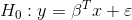
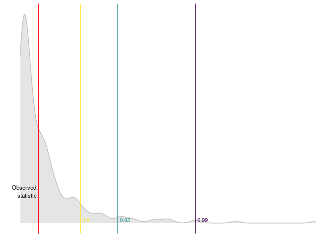
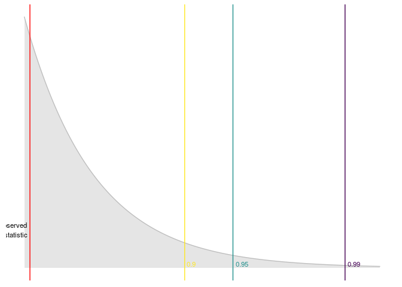
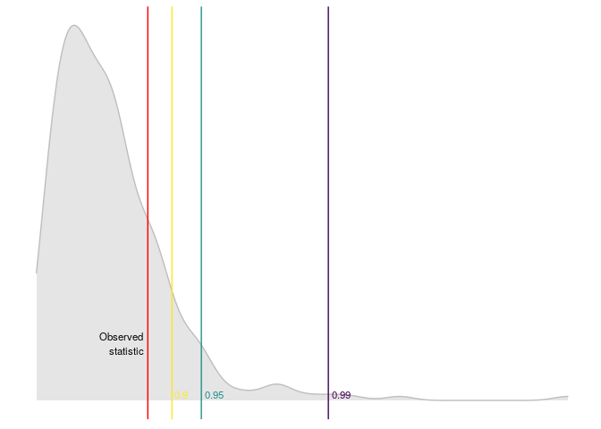
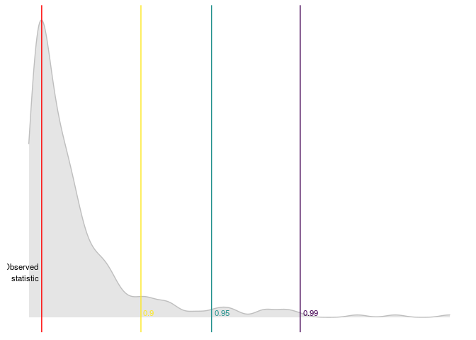

The goal of linearspectestr is to contrast the linear hypothesis of a model:

Using the Domínguez-Lobato test which relies on wild-bootstrap. Also the Ramsey RESET test is implemented.
Installation
You can install (soon) the released version of linearspectestr from CRAN with:
And the development version from GitHub with:
Examples
Simplest linear models using lm function
library(linearspectestr)
x <- 1:100
y <- 1:100
lm_model <- lm(y~x)
dl_test <- dominguez_lobato_test(lm_model)dplyr::glimpse(dl_test$test)
#> Observations: 1
#> Variables: 7
#> $ name_distribution <chr> "rnorm"
#> $ name_statistic <chr> "cvm_value"
#> $ statistic <dbl> 7.562182e-29
#> $ p_value <dbl> 0.4133333
#> $ quantile_90 <dbl> 2.437899e-28
#> $ quantile_95 <dbl> 3.943113e-28
#> $ quantile_99 <dbl> 7.069412e-28Also linearspectestr can plot the results

Run in parallel!
library(linearspectestr)
x_p <- 1:1e5
y_p <- 1:1e5
lm_model_p <- lm(y_p~x_p)
dl_test_p <- dominguez_lobato_test(lm_model_p, n_cores=7)dplyr::glimpse(dl_test_p$test)
#> Observations: 1
#> Variables: 7
#> $ name_distribution <chr> "rnorm"
#> $ name_statistic <chr> "cvm_value"
#> $ statistic <dbl> 6.324343e-21
#> $ p_value <dbl> 0.3433333
#> $ quantile_90 <dbl> 1.72606e-20
#> $ quantile_95 <dbl> 2.523203e-20
#> $ quantile_99 <dbl> 3.641144e-20RESET test can also be used to test the linear hypothesis
library(linearspectestr)
x <- 1:100 + rnorm(100)
y <- 1:100
lm_model <- lm(y~x)
r_test <- reset_test(lm_model)dplyr::glimpse(r_test)
#> Observations: 1
#> Variables: 6
#> $ statistic <dbl> 0.1608255
#> $ p_value <dbl> 0.9227354
#> $ df <int> 2
#> $ quantile_90 <dbl> 4.60517
#> $ quantile_95 <dbl> 5.991465
#> $ quantile_99 <dbl> 9.21034An then we can plot the results

Linear fixed effects with lfe
library(linearspectestr)
library(dplyr)
#>
#> Attaching package: 'dplyr'
#> The following objects are masked from 'package:stats':
#>
#> filter, lag
#> The following objects are masked from 'package:base':
#>
#> intersect, setdiff, setequal, union
library(lfe)
#> Loading required package: Matrix
# This example was taken from https://www.rdocumentation.org/packages/lfe/versions/2.8-5/topics/felm
x <- rnorm(1000)
x2 <- rnorm(length(x))
# Individuals and firms
id <- factor(sample(20,length(x),replace=TRUE))
firm <- factor(sample(13,length(x),replace=TRUE))
# Effects for them
id.eff <- rnorm(nlevels(id))
firm.eff <- rnorm(nlevels(firm))
# Left hand side
u <- rnorm(length(x))
y <- x + 0.5*x2 + id.eff[id] + firm.eff[firm] + u
new_y <- y + rnorm(length(y))
## Estimate the model
est <- lfe::felm(y ~ x + x2 | id + firm)
## Testing the linear hypothesis and plotting results
dominguez_lobato_test(est, n_cores = 7) %>%
plot_dl_test()
ARMA models
library(linearspectestr)
library(dplyr)
x <- rnorm(100)**3
arma_model <- forecast::Arima(x, order = c(1, 0, 1))
#> Registered S3 method overwritten by 'xts':
#> method from
#> as.zoo.xts zoo
#> Registered S3 method overwritten by 'quantmod':
#> method from
#> as.zoo.data.frame zoo
#> Registered S3 methods overwritten by 'forecast':
#> method from
#> fitted.fracdiff fracdiff
#> residuals.fracdiff fracdiff
dominguez_lobato_test(arma_model) %>%
plot_dl_test()
References
- Manuel A. Domínguez and Ignacio N. Lobato (2019). Specification testing with estimated variables. Econometric Reviews.